Práctica Taller
Instalación local (self‑hosted) nunha distribución Kali GNU/Linux virtualizada
Escenario
A máquina anfitrión empregada é un sistema operativo baseado en Debian GNU/Linux con:
1. Oracle VirtualBox v7.1.6
2. vagrant 2.4.7-1
Para un correcto seguimento da práctica aconséllase empregar as versións e sistema operativo comentados anteriormente.
Cheat Sheets Docker
Ligazóns de Interese:
1. Cheat Sheets Docker
2. Cheat Sheet Vagrant
Dentro da documentación oficial sobre a Instalación de SysReptor atoparás no pé de páxina no punto 1 Kali non soamente a documentación para a instalación nun sistema operativo Kali GNU/Linux, senón tamén a instalación de plantillas de offsec e htb, así como un titorial de uso da ferramenta. Así, partindo como base esta documentación imos:
1. Xerar un máquina virtual Kali GNU/Linux mediante un arquivo template Vagrantfile.
2. Unha vez rematado o proceso de Vagrant imos executar o script(comandos docker) para a instalación de SysReptor.
Procedemento
- Na máquina anfitrión: Copiar o seguinte contido nun ficheiro de nome Vagrantfile:
Na mesma ruta xerar o ficheiro
Vagrant.configure("2") do |config| # Máquina SysReptor: KALI-SysReptor config.vm.define "KALI-SysReptor" do |kali_a| kali_a.vm.box = "kalilinux/rolling" kali_a.vm.hostname = "KALI-SysReptor" kali_a.vm.boot_timeout = 1800 kali_a.vm.provider "virtualbox" do |vb| vb.gui = true vb.memory = "2048" vb.cpus = 2 vb.name = "KALI-SysReptor" vb.customize ["modifyvm", :id, "--groups", "/HE/Templates"] end kali_a.vm.network "private_network", ip: "192.168.120.100", virtualbox__intnet: "template", adapter: 2 # --- 1) Clave + apt via HTTP para estabilizar --- kali_a.vm.provision "shell", inline: <<-'SHELL' set -euo pipefail export DEBIAN_FRONTEND=noninteractive # 1. Forzar HTTP de momento (evitar crash TLS inicial) if grep -qE 'https://http\.kali\.org/kali' /etc/apt/sources.list; then sed -i 's|https://http.kali.org/kali|http://http.kali.org/kali|' /etc/apt/sources.list fi # 2. Nova clave (2025) vía HTTP para non depender de TLS wget -q http://archive.kali.org/archive-keyring.gpg -O /usr/share/keyrings/kali-archive-keyring.gpg # 3. Índices por HTTP apt-get update -y || true # 4. Keyring oficial + TLS básicos apt-get install -y --no-install-recommends kali-archive-keyring ca-certificates apt-transport-https curl # 5. Reloxo (evita fallos TLS por desaxuste de hora) timedatectl set-ntp true || true SHELL # --- 2) Mirror estable + apt robusto + GRUB fix + instalación --- kali_a.vm.provision "shell", inline: <<-'SHELL' set -euo pipefail export DEBIAN_FRONTEND=noninteractive # 0) Config apt robusto (sen comentarios) cat >/etc/apt/apt.conf.d/99retry <<'APTCONF' Acquire::Retries "5"; Acquire::https::Timeout "40"; Acquire::http::Timeout "40"; Acquire::ForceIPv4 "true"; APTCONF # 1) Fixar mirror estable con signed-by (HTTPS xa funciona) sed -i 's|^deb .*kali .*|deb [signed-by=/usr/share/keyrings/kali-archive-keyring.gpg] https://kali.download/kali kali-rolling main non-free-firmware contrib non-free|' /etc/apt/sources.list # 2) Limpar e rexenerar índices apt-get clean rm -rf /var/lib/apt/lists/* apt-get update -y || true apt-get update -y # 2.5) *** GRUB FIX ***: preseed do dispositivo correcto e reconfiguración non interactiva apt-get install -y --no-install-recommends debconf-utils ROOTDEV="$(df / --output=source | tail -1)" PARENT="$(lsblk -no pkname "$ROOTDEV" 2>/dev/null || true)" DISK="/dev/${PARENT:-sda}" echo "[GRUB] Instalación en: $DISK" # Preseed de debconf para grub-pc printf 'grub-pc grub-pc/install_devices multiselect %s\n' "$DISK" | debconf-set-selections printf 'grub-pc grub-pc/install_devices_empty boolean false\n' | debconf-set-selections printf 'grub-pc grub2/linux_cmdline string \n' | debconf-set-selections printf 'grub-pc grub-pc/kickseed boolean false\n' | debconf-set-selections # Asegurar paquetes de grub presentes (non falla se xa están) apt-get install -y --no-install-recommends grub-pc grub2-common || true # Reconfigurar sen diálogos dpkg-reconfigure -f noninteractive grub-pc || true # 3) Dist-upgrade con opcións para aceptar configs novas, e fallback apt-get -y -o Dpkg::Options::="--force-confnew" dist-upgrade \ || (dpkg --configure -a || true; apt-get -f install -y --fix-missing || true; apt-get update -y || true) # 4) Paquetes (reintentos) pkgs="xfce4 lightdm zsh whois openssh-server ca-certificates" for i in 1 2 3 4 5; do if apt-get install -y --no-install-recommends $pkgs; then break else echo "[apt] intento $i fallou; reintento en 10s..." sleep 10 apt-get -f install -y --fix-missing || true apt-get update -y || true fi done # 5) Usuario 'kali' se non existe (hash sha-512) if ! id -u kali &>/dev/null; then useradd -m -d /home/kali -s /usr/bin/zsh -p "$(mkpasswd -m sha-512 kali)" kali fi usermod -aG kali-trusted kali || true # 6) SSH systemctl enable ssh systemctl restart ssh # 7) Teclado ES sed -i 's/^XKBLAYOUT=.*/XKBLAYOUT="es"/' /etc/default/keyboard || true setupcon || true su - kali -c 'echo "{ [ - n :0.0 ] && setxkbmap es ; } 2>/dev/null" >> ~/.zshrc' echo "{ [ - n :0.0 ] && setxkbmap es ; } 2>/dev/null" >> /root/.zshrc SHELL end endinstall_sysreptor.shde punto 1 Kali, o cal posúe o seguinte contido:#!/bin/bash # Exit immediately if a command exits with a non-zero status set -e # Set up Docker's apt repository. # Update the package index echo "Updating package index..." sudo apt-get update # Install required packages including sed, curl, openssl, uuid-runtime, and coreutils echo "Installing required packages..." sudo apt-get install -y sed curl openssl uuid-runtime coreutils ca-certificates # Add Docker's official GPG key echo "Adding Docker's official GPG key..." sudo install -m 0755 -d /etc/apt/keyrings sudo curl -fsSL https://download.docker.com/linux/debian/gpg -o /etc/apt/keyrings/docker.asc sudo chmod a+r /etc/apt/keyrings/docker.asc # Add the Docker repository to Apt sources echo "Adding Docker repository to Apt sources..." echo \ "deb [arch=$(dpkg --print-architecture) signed-by=/etc/apt/keyrings/docker.asc] https://download.docker.com/linux/debian \ bookworm stable" | \ sudo tee /etc/apt/sources.list.d/docker.list > /dev/null # Update the package index again echo "Updating package index again..." sudo apt-get update # Install Docker echo "Installing Docker..." sudo apt-get install -y docker-ce docker-ce-cli containerd.io docker-compose-plugin # Start and enable Docker service echo "Starting and enabling Docker service..." sudo systemctl start docker sudo systemctl enable docker # Verify Docker installation echo "Verifying Docker installation..." sudo docker run hello-world echo "Docker installation completed successfully!" # Download the install.sh script echo "Downloading the install.sh script..." wget https://docs.sysreptor.com/install.sh # Make the script executable echo "Making install.sh executable..." chmod +x install.sh # Prompt user for confirmation to run the install script read -p "Do you want to run the install.sh script? (y/n): " choice if [[ "$choice" == "y" || "$choice" == "Y" ]]; then echo "Running install.sh..." sudo ./install.sh else echo "You chose not to run the install.sh script from Sysreptor." echo "You can run the following commands manually if needed:" echo "wget https://docs.sysreptor.com/install.sh" echo "chmod +x install.sh" echo "sudo ./install.sh" fi - Na máquina anfitrión. Executar:
IMPORTANTE!
Esperar a que rematen os comandos vagrant up e vagrant reload para facer login na máquina virtual.
Este proceso vai tardar xa que entre outras cousas actualízase o sistema operativo virtualizado Kali GNU/Linux.
$ cd /path/Vagrantfile/ #Acceder ao directorio onde está xerado o Vagrantfile anterior
$ vagrant up #Executar para poder xerar a máquina virtual en Oracle VirtualBox
$ vagrant reload #Reiniciar a máquina virtual aplicando os cambios do Vagrantfile sen destruíla nin perder a configuración ou datos
- Usuario:
kali - Contrasinal:
kali 4. Na máquina virtual. Executar nunha consola:
$ cd /vagrant #Acceder ao directorio /vagrant, que ven sendo o directorio da máquina anfitrión onde está xerado o Vagrantfile
$ sudo bash install_sysreptor.sh #Con permisos `sudo` sendo o usuario `kali` executar o script `install_sysreptor.sh` para a instalación de sysreptor a través de docker.
Neste proceso empregarase o script de instalación oficial de SysReptor, no cal debemos responder unhas preguntas:
Making install.sh executable...
Do you want to run the install.sh script? (y/n): y
Running install.sh...
Good to see you.
Get ready for the easiest pentest reporting tool.
Downloading Docker Compose files from https://github.com/syslifters/sysreptor/releases/latest/download/setup.tar.gz ...
Checking download...
Unpacking sysreptor.tar.gz...
License key (leave blank for Community Edition; you can upgrade anytime later):
Encrypt files and database? [y/n]: n
Creating app.env...
Generating Django secret key...
SysReptor runs on localhost (127.0.0.1) by default.
Should we setup a webserver (Caddy in Docker) for you to expose it to your local network or the Internet? [y/n]: n
Okay. Won't set up a webserver.
Creating docker volumes...
Volume: sysreptor-db-data
Volume: sysreptor-app-data
Launching SysReptor via docker compose...
...
Very nice.
You can now login at http://127.0.0.1:8000
Username: reptor
Password: ***********************************
Copy your password now. Copied? [y/n]:y
This was easy, wasn't it?
$ firefox http://127.0.0.1:8000 & #Unha vez rematada a instalación abrir o navegador para acceder ao programa sysreptor e empregar as credenciais xeradas no paso anterior.
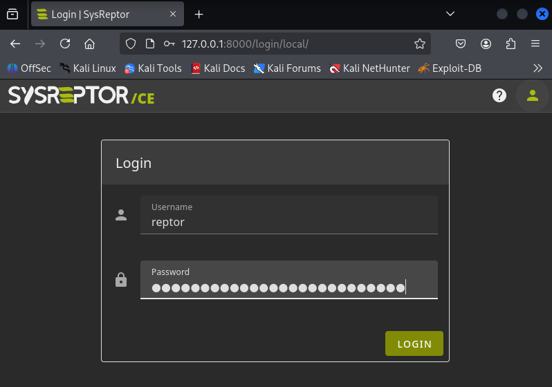
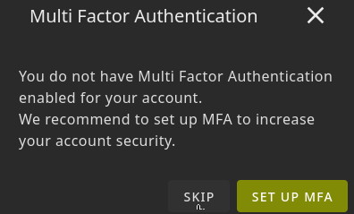
Instalación de plantillas
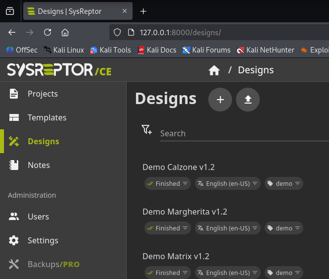
1) Facerse
root e acceder ao directorio onde SysReptor foi instalado 2) OffSec designs
# curl -s https://docs.sysreptor.com/assets/offsec-designs.tar.gz | docker compose exec --no-TTY app python3 manage.py importdemodata --type=design
3) HTB designs e proxectos demo
# curl -s https://docs.sysreptor.com/assets/htb-designs.tar.gz | docker compose exec --no-TTY app python3 manage.py importdemodata --type=design
# curl -s https://docs.sysreptor.com/assets/htb-demo-projects.tar.gz | docker compose exec --no-TTY app python3 manage.py importdemodata --type=project
4) Actualizar a interface web en http://127.0.0.1:8000
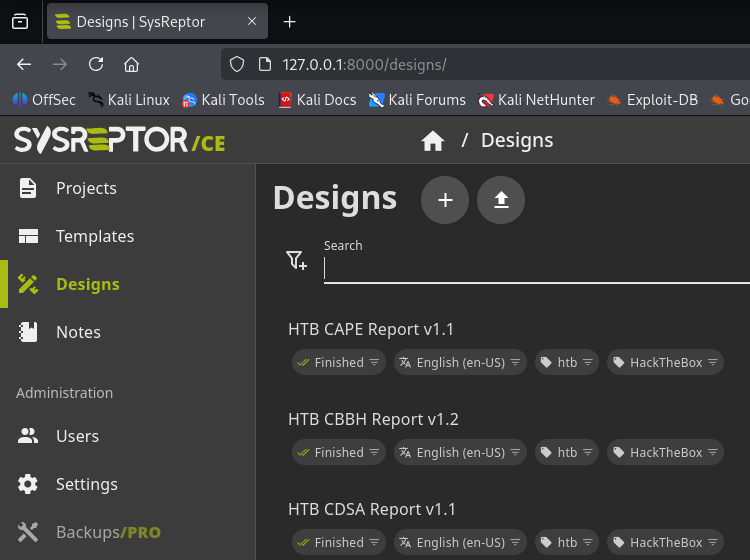
Alternativa: subir os
.tar.gzdesde a interface web (Projects/Designs → Upload).
Fluxo típico para OSCP con SysReptor
-
Crear proxecto co template OSCP
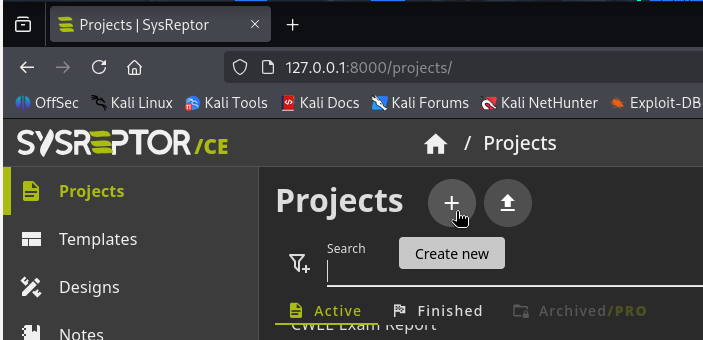
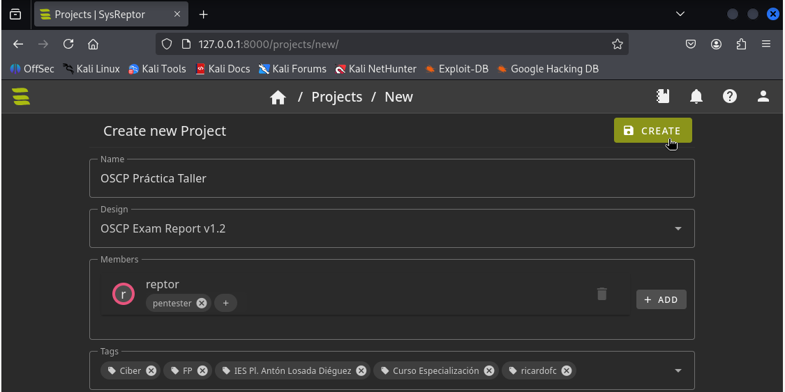
-
Encher seccións: hosts, vulnerabilidades, PoC, capturas
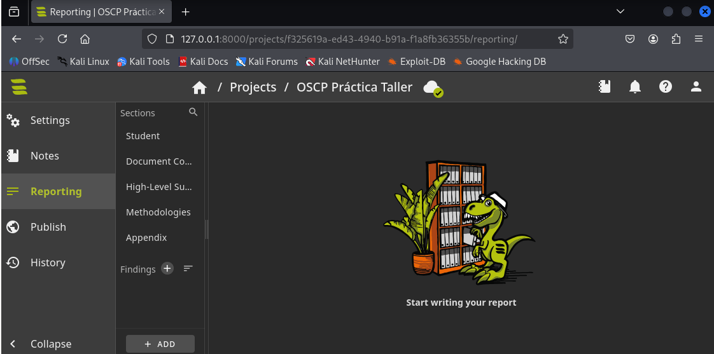
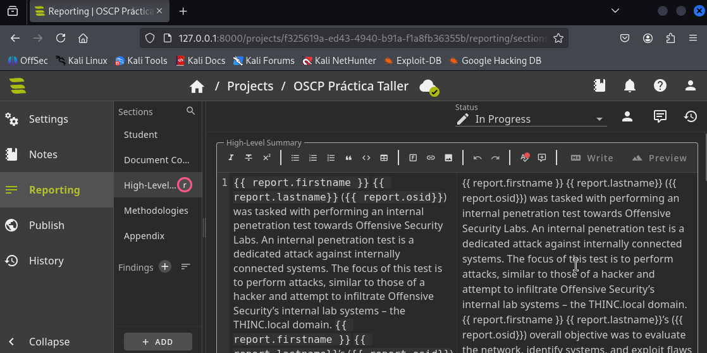
Templates Jinja2
O que ves en SysReptor (na imaxe das seccións High-Level Summary ou Methodologies) está escrito en Markdown con motor de templates Jinja2:
- O texto libre do informe vaise redactando en Markdown (listas, títulos, negrita, ligazóns, etc.).
- As partes dinámicas que se substitúen automaticamente (por exemplo,
{{ report.firstname }},{{ report.lastname }},{{ report.osid }}) son expresións de Jinja2, un motor de plantillas en Python.
En resumo: en SysReptor os informes escríbense en Markdown enriquecido con placeholders Jinja2 que logo se renderizan ao exportar o documento.
-
Renderizar PDF premendo en Publish e descargar premendo en Download
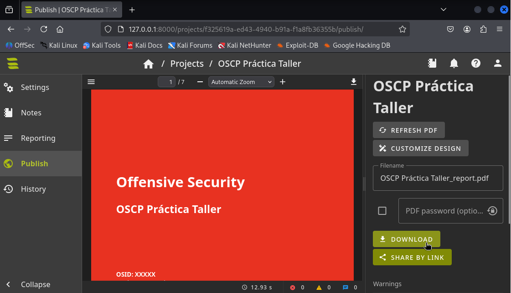
-
Comprimir en .7z (contraseña) segundo as normas de OffSec
-
Subir o paquete en ≤24 h ao portal de OffSec
Crear e Modificar unha copia do Design Demo Matrix v1.2 en SysReptor CE
Este procedemento describe como crear e modificar unha copia do Design Demo Matrix v1.2 na versión Community Edition (CE) de SysReptor.
-
Acceder a Designs
Vai ao menú lateral → Settings → Designs.
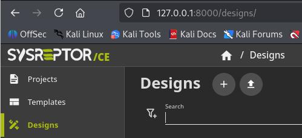
-
Crear un novo deseño a partir de
Demo Matrix v1.2
a. Preme o botón + (Create New).
b. No cadro New Design:- Elixir o deseño
Demo Matrix v1.2. - Picar en
COPY EXISTING DESIGN.
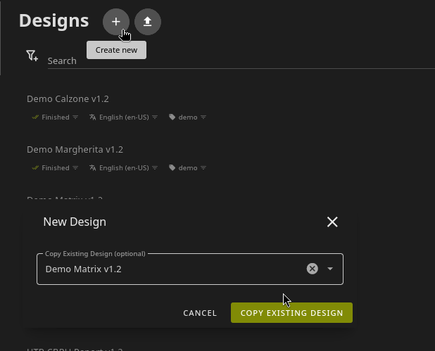
c. Modificar configuración do novo Deseño: - Ponlle un nome, por exemplo: (GL) Demo Matrix v1.2.
- Modifica os Tags se é preciso.
d. Garda para crear o novo deseño.
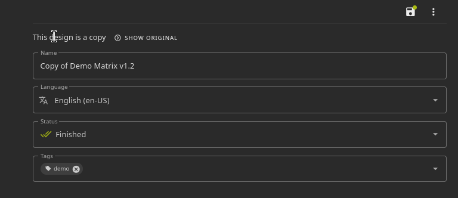
- Elixir o deseño
-
Editar o novo deseño
Editar
Xa accedes directamente á zona de edición, pero tamén podes acceder a través da lista de deseños, abrindo o recén xerado (GL) Demo Matrix v1.2. Vue é a linguaxe de plantillas reactivas que SysReptor emprega para unir o HTML coas variables do informe."
a. Acceder a PDF Designer - HTML+VUE e modificar o código html e javascript. O HTML define a estrutura estática do documento (títulos, parágrafos, táboas, etc.) e a parte Vue permite empregar directivas e variables dinámicas (por exemplo, {{ finding.title }} ou bucles v-for) para que o PDF xerado se encha cos datos reais dun informe (findings, cliente, proxecto, etc.).

c. Acceder a PDF Designer - ASSETS para subir todas as imaxes que precises e substituir o logo e o fondo da portada se o desexas.
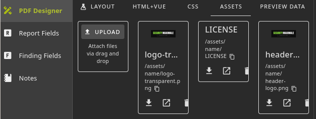
d. Garda os cambios.
-
Acceder a Report Fields:
- Engade / modifica / elimina todos os campos que precises. Estes serán chamados dende PDF Designer - HTML+VUE. Por exemplo: {{ report.title}}, {{ report.report_date }}, etc**.
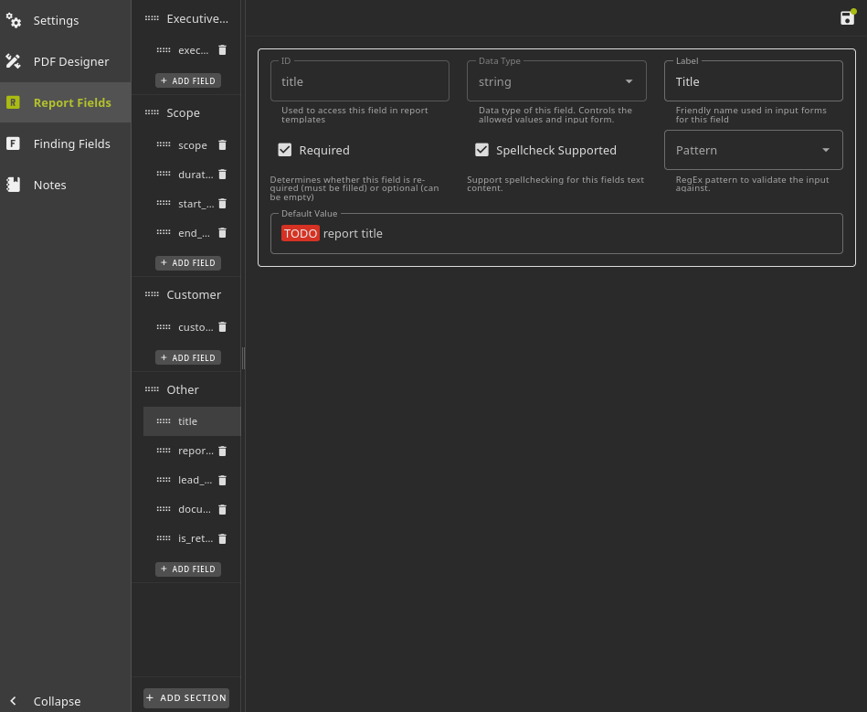
- Engade / modifica / elimina todos os campos que precises. Estes serán chamados dende PDF Designer - HTML+VUE. Por exemplo: {{ report.title}}, {{ report.report_date }}, etc**.
-
Acceder a Finding Fields:
- Engade / modifica / elimina todos os campos que precises. Estes serán chamados dende a xeración dun Project ao escoller o Design. sysreptor-report-fields.png
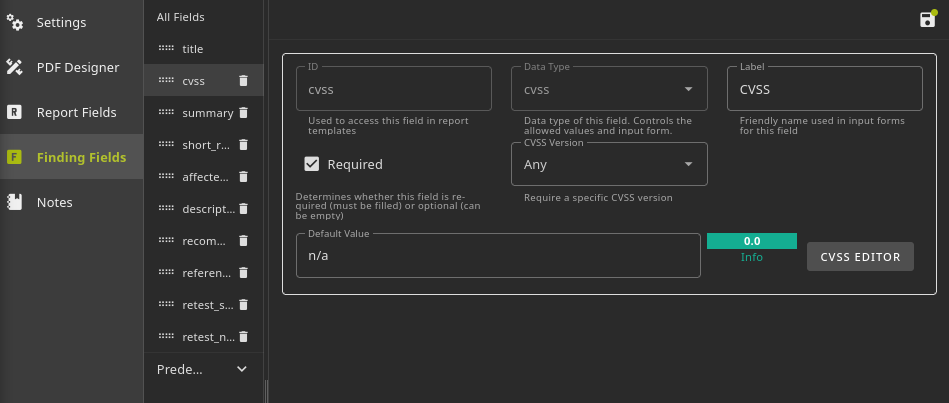
PREVIEW DATA
Ter en conta que en Preview Data visualízase unicamente a representación do deseño empregando o JSON de exemplo que ti defines nesa lapela, xunto cos Report Fields e Finding Fields configurados; é dicir, non mostra automaticamente todos os elementos do HTML+VUE, senón só aqueles valores e bloques que teñen datos dispoñibles no preview, servindo como maqueta de proba antes de xerar un informe real.
- Engade / modifica / elimina todos os campos que precises. Estes serán chamados dende a xeración dun Project ao escoller o Design. sysreptor-report-fields.png
-
Garda os cambios para que o deseño quede dispoñible cando crees informes.
Usar o novo Design
-
Crear/Modificar un proxecto(Project) e seleccionar (GL) Demo Matrix v1.2 como deseño.
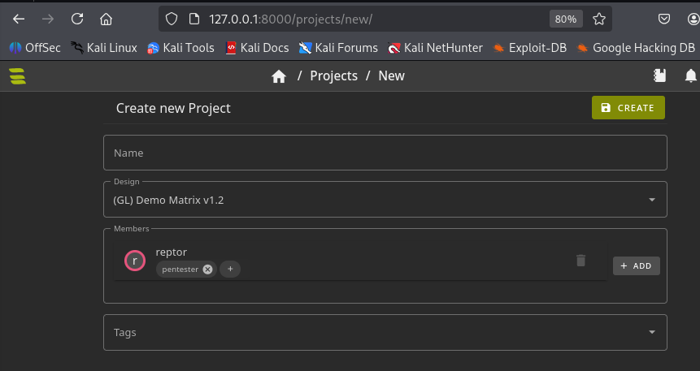
-
Na sección Reporting crear un novo Finding, o cal empregará os campos antes comentados na edición do deseño
Finding Fields.
Ao crear o Finding novo podes seleccionar un Template existente, por exemplo: Critical 9.8 SQL Injection (SQLi).
Picar no botón CREATE FROM TEMPLATE e modificalo.
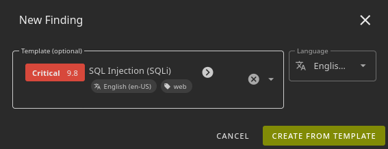
Novo Template
Se o que queres e facer permanente e reutilizable un
Findingo mellor é crear unTemplate, o cal logo poderás escoller para engadilo ao informe e incluso modificar sen afectar ao modelo orixinal.
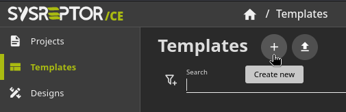
-
Na sección Publish é posible xerar e descargar o informe en formato PDF, coas opcións de actualizar o documento mediante Refresh PDF, modificar o deseño ligado con Customize Design, definir o nome do ficheiro e engadir un contrasinal opcional; finalmente, o informe pode descargarse directamente ou compartirse mediante ligazón.
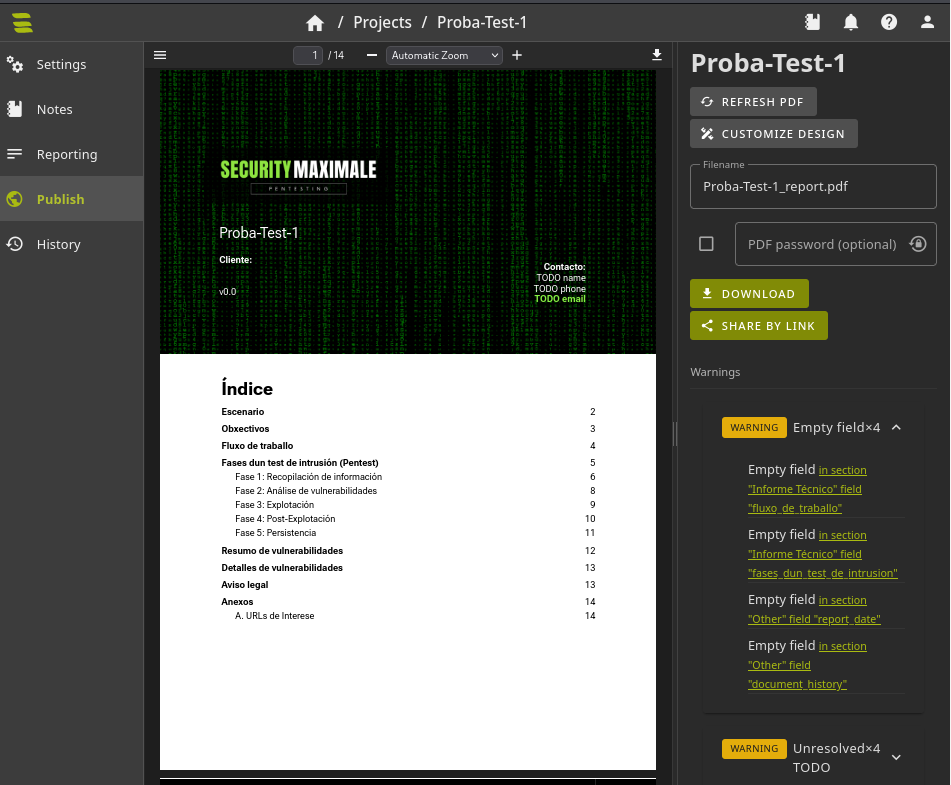
Warnings
Se aparecen
Warningspodemos acceder á sua resolución picando na ligazón correspondente aoWarning.
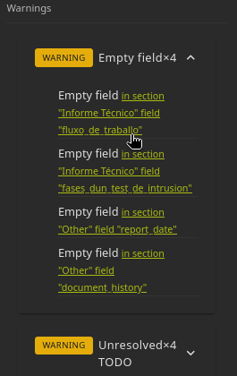
-
O informe xerado mostrará os textos traducidos e o estilo personalizado.
Exportar o novo Design
- Acceder a Designs
- Escoller o deseño a exportar.
- Na sección Settings do deseño, fai clic na icona de tres puntos (arriba á dereita) e selecciona a opción Export.
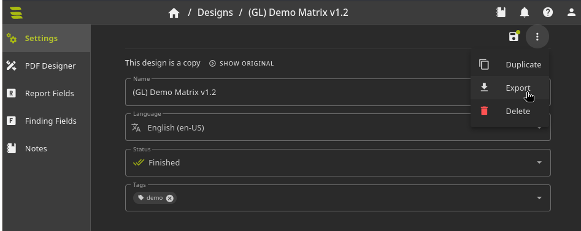
Descargar novo Design xerado
Importar un Design
Para importar un Design debemos:
1. Acceder a Designs
2. Picar na icona da frecha para Importar
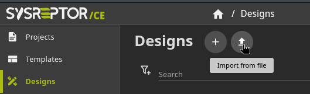
3. Escoller o ficheiro a importar e modificar a configuración:
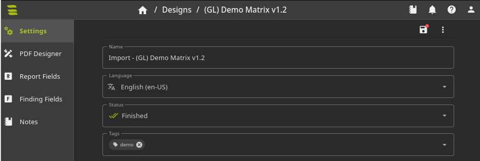
4. Gardar os cambios.
5. Deseño importado (Podemos verificalo na sección
Designs).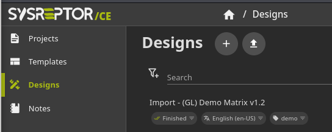